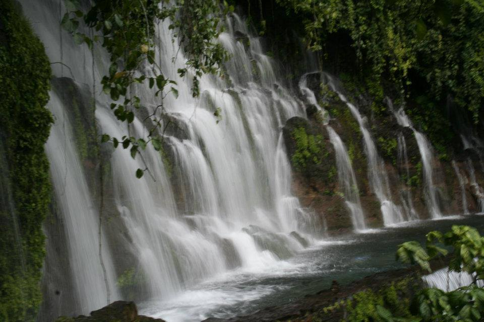
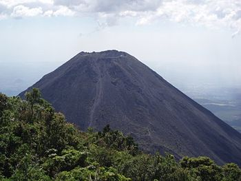
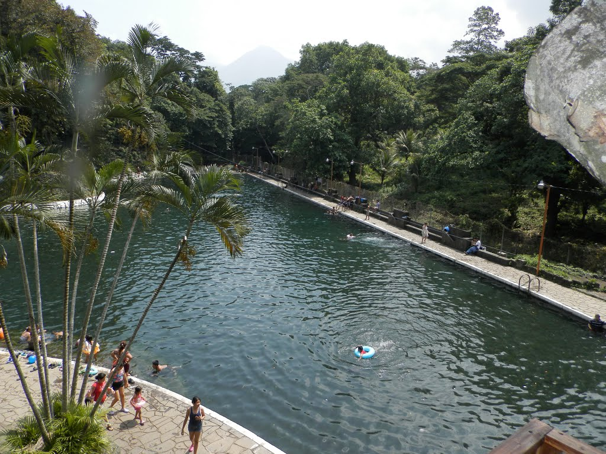

Sonsonate es uno de los departamentos de El Salvador que se encuentran ubicados en la zona occidental de El Salvador; su nombre proviene del nahuat Centzontliat, y quiere decir “muchos ríos”, aunque algunos la traducen como “río grande”.
La extensión territorial Sonsonate es de 1,225 metros cuadrados, su población según el censo de 2007 era de 438 960 habitantes.
Fue fundado como departamento en el año de 1824.Se encuentra a una distancia de 64 kilómetros de distancia de la capital San Salvador.
Las fiestas patronales de Sonsonate se celebran del 25 de enero al 2 de febrero de cada año, en honor a la Virgen de la Candelaria. La primera imagen de Nuestra Señora de Candelaria llegó a la ciudad en el año 1604 y se encontraba ubicada en el antiguo templo de Nuestra Señora de la Merced. Para 1834 nació la Feria de Nuestra Señora de Candelaria, cuando la imagen fue trasladada al templo parroquial de la Santísima Trinidad. Dicho festejo se instituyó por Decreto gubernamental del Diario Oficial del 28 de abril de 1896, con el nombre de Feria de Candelaria.
| Info 1 | Info 2 |
|---|---|
|  | Estas hermosas cascadas están en Sonsonate, específicamente en Juayúa y reúnen las condiciones para un refrescante paseo familiar. La caída de agua termina en unas enormes piscinas naturales que no son muy profundas y el clima es muy agradable. Representantes de Juayúa Encantador – Oficina municipal de turismo, compartieron con nosotros datos de interés para visitar este lindo lugar. |
|  | Ubicado a unos 15 km al noreste de la ciudad de Sonsonate. Se halla contiguo al Cerro Verde y al Volcán de Santa Ana esta área es nombrada El Complejo de los Volcanes . Es considerado uno de los volcanes mas jóvenes en el mundo y todavía activo habiendo ocurrido su ultima erupción en octubre de 1966. Tiene una elevación de 1910 m.s.n.m Según el profesor e historiador Salvadoreño Jorge Lardé y Larín “a principios del siglo XVII se formó una hondonada, al sureste del volcán de Santa Ana, un cráter por el cual salía constantemente una columna de humo negro y espeso con un fuerte olor a azufre y fuego de tiempo en tiempo. |
 | Es un bellísimo parque de agradable temperatura, que cuenta con senderos muy lindos, sombreados por las más diversas especies de plantas y árboles. |